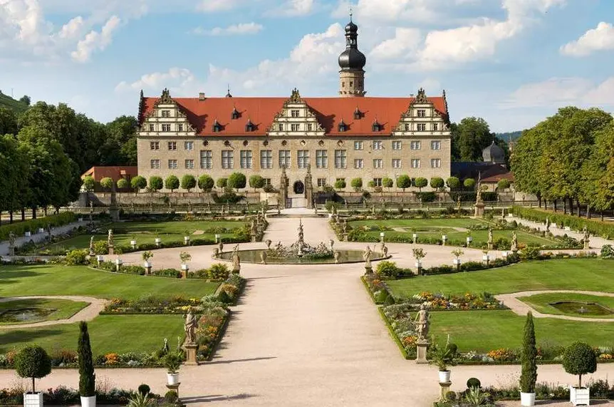
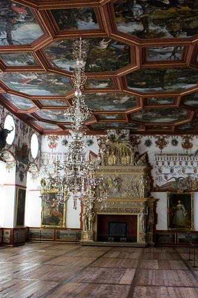

Εκπαιδευτικές Δραστηριότητες
Συμμετέχετε σε απλές διαδραστικές εμπειρίες μάθησης και δραστηριότητες όπως:
- ⚔️ Πέτυχε με το τόξο σου το στόχο
- 🍲 Τα γουρούνια

Περιηγήσου σε ένα εντυπωσιακό 2D περιβάλλον εμπνευσμένο από το πραγματικό Castle and Gardens Weikersheim, ανακαλύπτοντας σημεία ιστορικού και πολιτιστικού ενδιαφέροντος.

Σημεία ενδιαφέροντος του 2D παιχνιδιού:

Συμμετέχετε σε απλές διαδραστικές εμπειρίες μάθησης και δραστηριότητες όπως:
Επισκεφθείτε το διαδραστικό κατάστημα αναμνηστικών και «αγοράστε» με την κάρτα σας ψηφιακά αντικείμενα όπως: